After completing this lesson, you’ll be able to:
The content used in this lesson builds on the previous lesson. To do this exercise, please complete the exercise in Create a Workspace App.
Jennifer continues working with her CAD Data Validation app. In this workflow, it's slightly inconvenient for end-users to find and open the HTML report to receive the validation results. Jennifer thinks a different transformation service would be better for this workflow.
Follow along with Jennifer's steps as she alters the transformation service her workspace uses in her app.
Jennifer returns to FME Flow and selects Manage Workspace Apps on the side menu under Flow Apps.
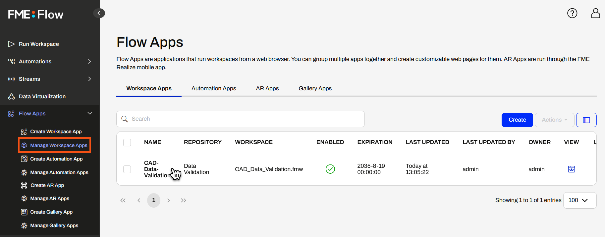
She clicks on her CAD-Data-Validation app to edit it.
The Editing Workspace App page is very similar to the options for creating a Workspace App. Jennifer scrolls down to Service, expands the drop-down options, and selects Data Download.
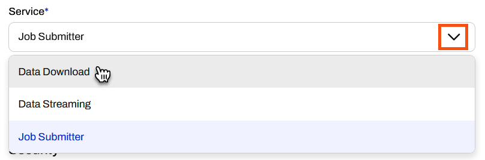
Jennifer expands the Parameter Defaults again. The Destination HTML File parameter is no longer listed. Instead of writing the HTML report to the location a user enters, FME Flow packages the HTML report in a zip file and presents a downloadable URL to the user. The only parameter is the Source AutoCAD File(s).
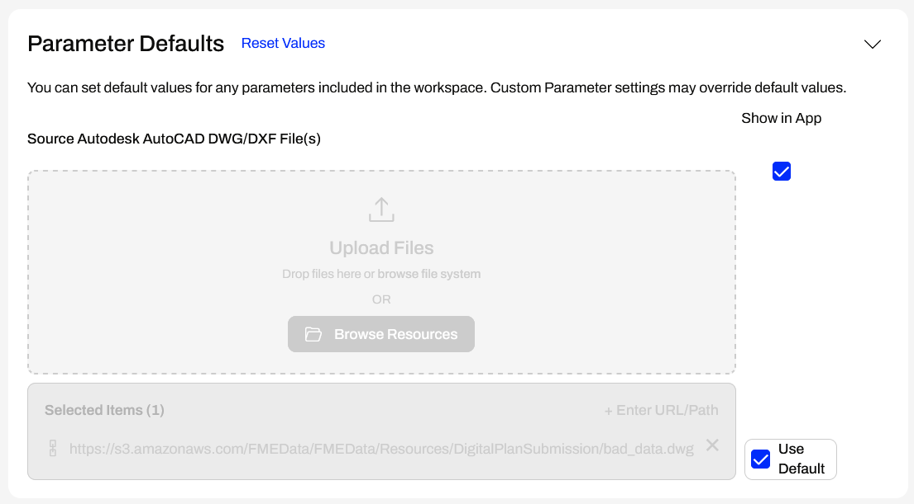
Jennifer only altered the service to Data Download in her editing session. Once she's done, she clicks Save.
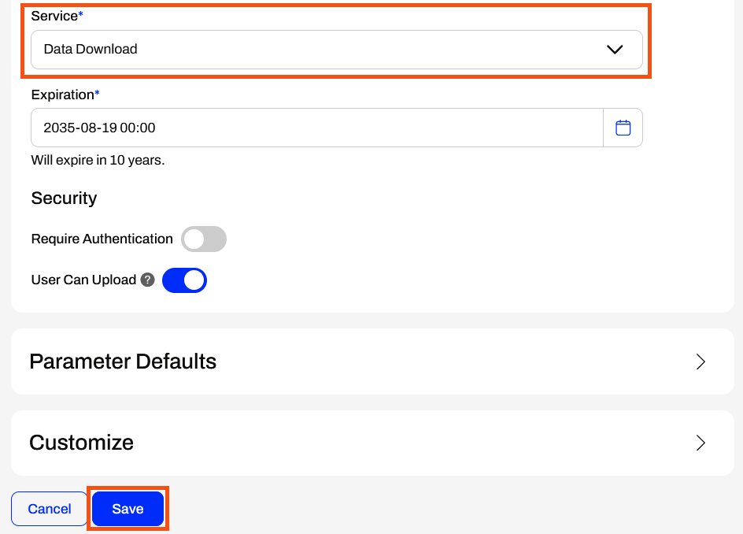
After saving her app, Jennifer clicks the URL to open it again. This time, she will use different source data, so she clicks the X to remove the default bad_data.dwg dataset.
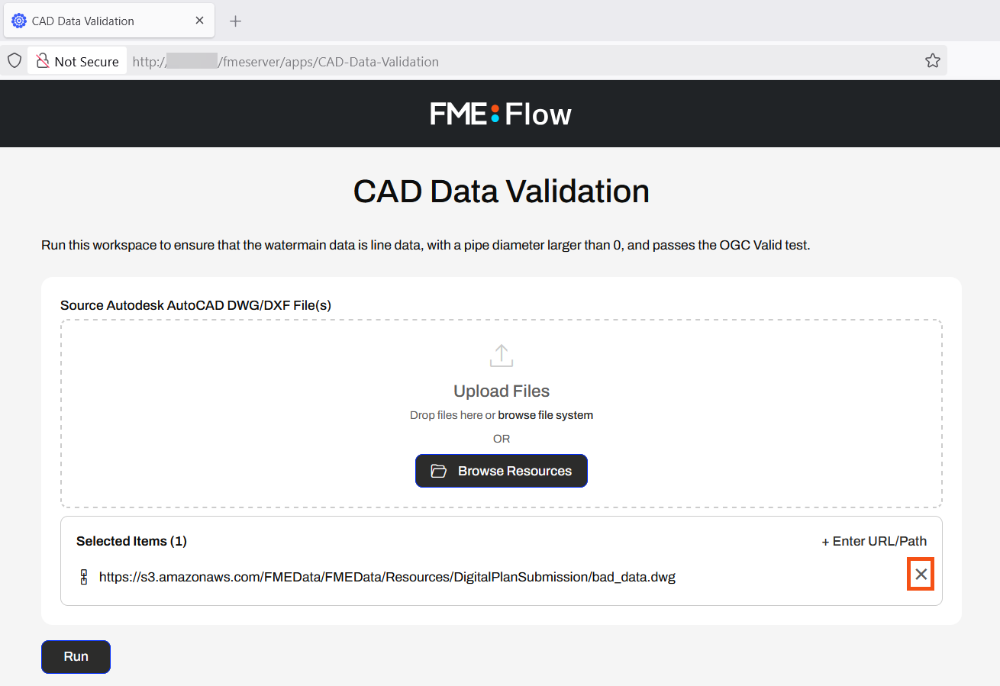
Jennifer opens the file explorer and navigates to C:\FMEData\Resources\DigitalPlanSubmission\good_data.dwg. She drags the good_data.dwg file into the source file Upload Files box.
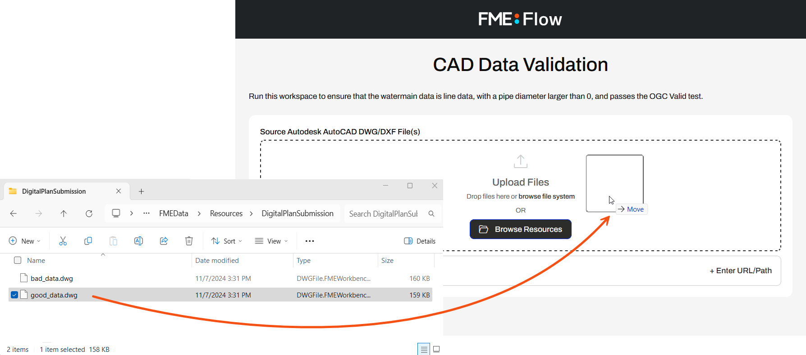
Once the file uploads, she clicks Run to submit the workspace to run.
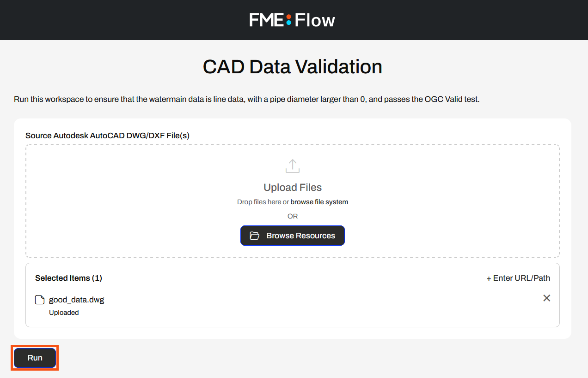
FME Flow processes the workspace with the new input data, packages the output HTML file into a zip folder, and presents Jennifer with the Data Download URL. She clicks on the URL to download the zip file.
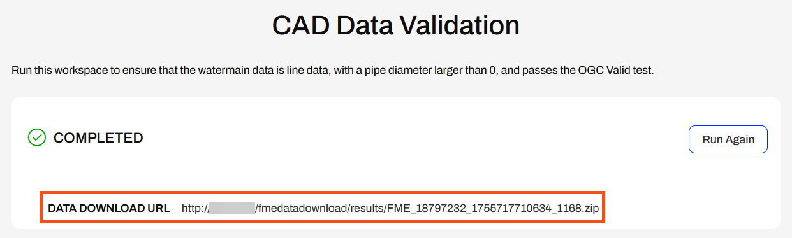
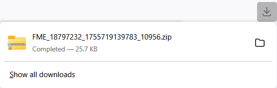
Jennifer opens the zip file in Downloads and extracts the file contents. She opens the HTML_1 folder and opens validation_results.html.
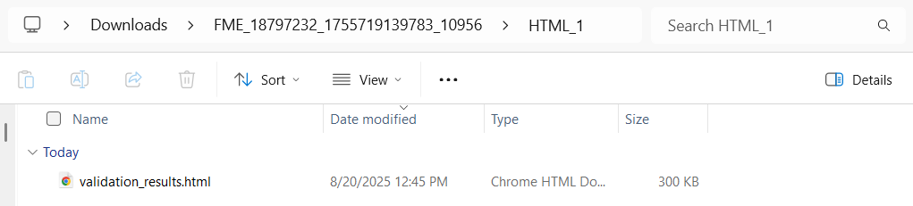
The HTML report shows the data validation was successful, and there's no table since no features failed validation.
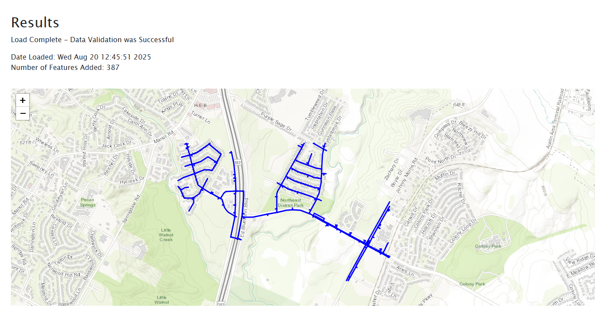
While FME Flow's Data Download service is convenient, Jennifer realizes the Data Streaming service would suit this workflow better to minimize end-users' steps to access the validation results.
She returns to FME Flow and edits her CAD-Data-Validation app again. She changes the Service to Data Streaming and saves her app.
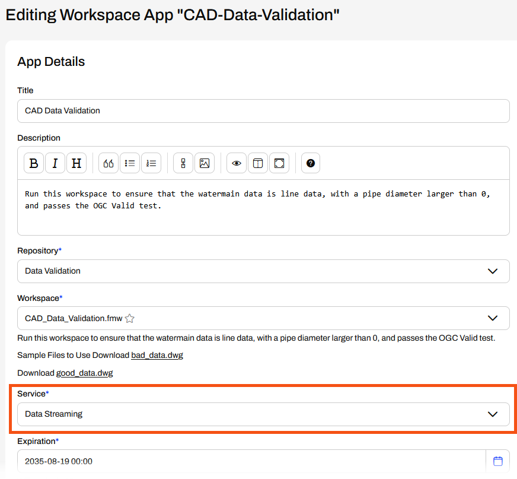
After saving her app, Jennifer opens it in the browser and reruns it with the bad_data.dwg default source file. While the FME Engine processes the workspace, FME Flow displays a message in the app telling Jennifer that it is processing.
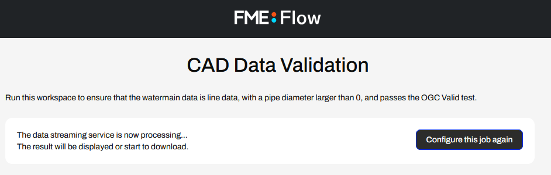
Once the workspace translation completes, FME Flow immediately displays the HTML validation report in Jennifer's web browser.
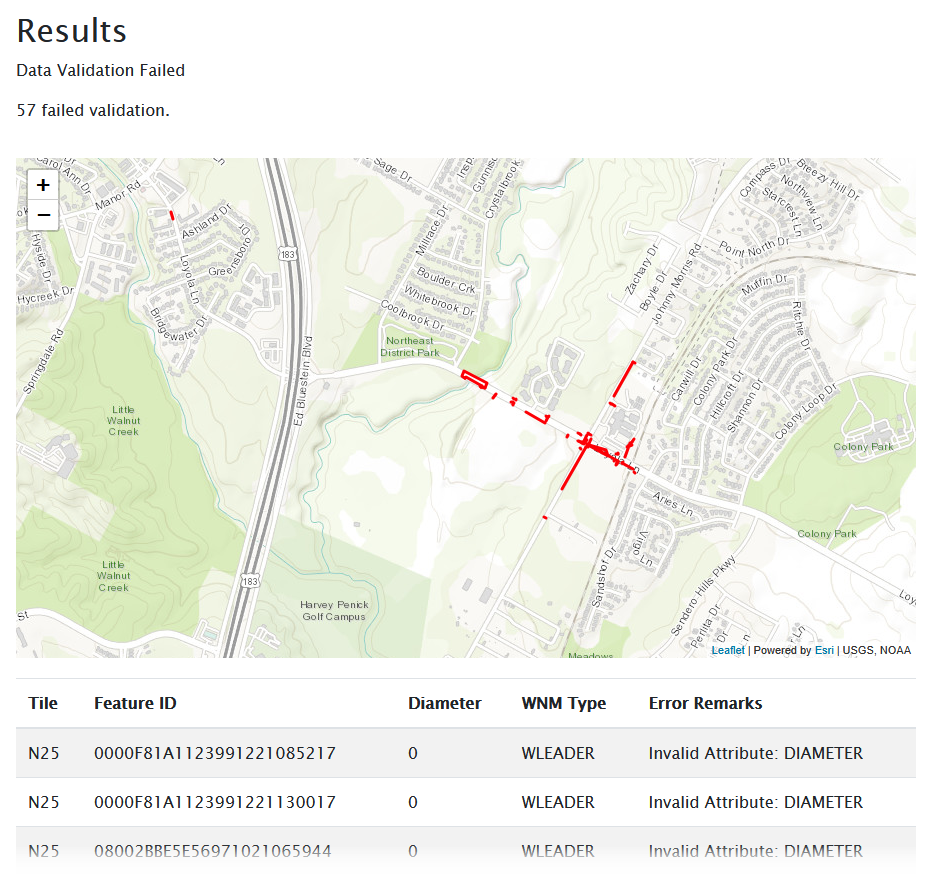
The Data Streaming service is best for Jennifer's workflow to return validation results to app users byt removing any steps where they have to navigate to and open the HTML report.